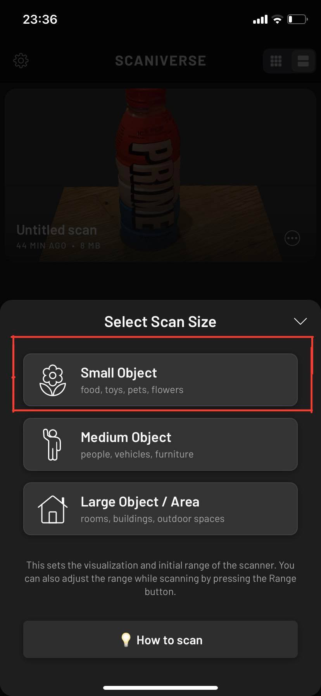

Verkefni 3
Í verkefni 3 átti að hanna módel fyrir 3D prentun sem ekki væri hægt að framkvæma með frádráttar framleiðslu. Seinni hluti verkefnisins er að 3D skanna einhvern hlut með t.d. photogrammetríu.
3D skönnun
Í öðrum hlutanum af Verkefni 3 á að velja sér einhvern hlut og 3D skanna hann með einhverju forriti af eigin vali. Ég byrjaði á því að velja mér hlut til þess að skanna. Ég valdi mér að skanna Prime flösku. Eftir það download-aði ég Qlone. Qlone 3D skönnunarapp sem Hafliði hafði mælt með í verkefnalýsingunni. Ég skoðaði appið nánar og sá strax að ég þurfti einhverja ákveðna mottu til þess að skanna hlutinn minn á og ef ég vildi ekki nota mottu þá þyrfti ég að borga rúma $20 fyrir að skanna eina litla flösku sem ég var alls ekki að fara gera þótt ég gæti selt þess flösku álíka mikinn pening.
Ég ráðlagði mig við félaga mína í þessum áfanga og þeir sögðu mér að nota Scaniverse. Það var margfalt einfaldara og þægilegra. Appið tekur vel á móti manni og er sáraeinfalt, byrjar einfaldlega að ýta á rauða plúsinn við miðjan skjáinn
Efitr að það er valið New Scan þá birtast valmöguleikar um stærð hlutsins sem verið er að skanna. Í mínu tilfelli valdi ég Small Object.

Svo er einfaldlega skannað allan hringinn á flöskunni, maður er í rauninni að taka flöskuna upp á video.
Að lokum er þetta útkoman. Ég snyrti þetta aðeins og minnkaði flötinn. Skannið hefði mátt fara betur en þetta var besta útkoman sem ég fékk eftir nokkrar tilraunir.
Ég þurfti að leita mér hjálpar um hvernig ég átti að setja inn myndband á vefsíðuna mína. Ég fékk góða lýsingu og hjálp frá þessari síðu hér.